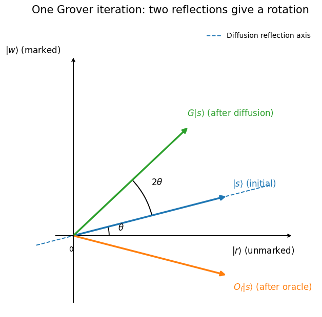

Grover's Algorithm
On the previous page, we discussed how quantum computation challenges the Strong Church-Turing Thesis. We will now study one important example of a quantum algorithm that can outperform classical algorithms: Grover's algorithm. Grover's algorithm solves an unstructured search problem using fewer queries than are needed in a classcal algorithm. We will first formulate the problem, develop some intuition for the algorithm, and finally prove a rigorous bound on the number of queries it makes.
The Search Problem
Suppose we have a collection of $N$ possible objects, and we want to find one satisfying a certain property. For example, imagine searching through an unsorted database for an entry satisfying some condition. Without any information about how the entries are organized, a classical algorithm may have to examine a linear number of objects to find the one we want.
Let's represent this problem rigorously. For simplicity, let $N=2^n$, so that each objects corresponds to a bit string $x\in\{0,1\}^n$. Suppose we are given a Boolean function $$f:\{0,1\}^n\to\{0,1\}$$, where $f(x)=1$ means that $x$ is an item we are searching for. We will assume there is exactly one such input, denoted by $w$: $$ f(w)=1,\qquad f(x)=0\quad\text{for every }x\neq w.$$ Our goal is to find this marked input $w$.
We will treat $w$ as an oracle. Our main measure of complexity will be the number of oracle queries. This is important: an oracle query need not take constant time when we actually construct a circuit for $f$. We are only interested in how many times an algorithm needs to use the oracle.
We will show that Grover's algorithm finds $w$ with high probability using only $O(\sqrt{N})$ quantum oracle queries, while classical randomized algorithms require $\Omega(N)$ queries in the worst case.
Constructing the Quantum Oracle
Why Do We Need a Reversible Oracle?
Our first task is to represent the function $f$ using a quantum circuit. The obvious idea would be to create a gate that maps $|x\rangle$ to $|f(x)\rangle$. However, this generally cannot be a quantum gate because it is not reversible. Many different inputs can have the same value of $f(x), so knowing $f(x)$ does not determine $x$. Furthermore, such a map would take $n$input qubits to just one output qubit.
In our discussion of classical reversible gates, we saw we could construct a reversible circuit by computing a Boolean function into an extra bit. We use exactly the same construction here. Define the reversible oracle $U_f$ by its action on computational basis states: $$ U_f|x\rangle|b\rangle =|x\rangle|b\oplus f(x)\rangle, \quad b\in\{0,1\}. $$ The first register is unchanged. The second qubit is flipped only when $$f(x)=1$$. Again, this is reversible because applying the transformation twice returns the original state: $$ U_f^2|x\rangle|b\rangle=|x\rangle|b\oplus f(x)\oplus f(x)\rangle = |x\rangle|b\rangle. $$
From a Reversible Oracle to a Phase Oracle
It turns out that Grover's algorithm is more convenient to describe using a different type of oracle. Rather than writing $$f(x)$$ into an extra qubit, we want to change the sign of the amplitude associated with the marked input. Define the phase oracle $$O_f$$ by $$ O_f|x\rangle=(-1)^{f(x)}|x\rangle=\begin{cases} -|x\rangle,&\text{if }x=w,\\ |x\rangle,&\text{if }x\neq w. \end{cases} $$ Notice the amplitude of $w\rangle\$ has been multiplied by $-1\$, introducing a rotation or phase of $\pi$ between the marked and unmarked states.
How can we construct this phase oracle using $U_f$? The key is to initialize the additional qubit to the state $$ |-\rangle=\frac{|0\rangle-|1\rangle}{\sqrt{2}}. $$ Since we choose our elementary gate set to be $H$, $T$, and $\mathrm{CNOT}$, it is natural to ask whether we can compute this state efficiently. It turns out we can, by applying the $H$ gate to the ancilla qubit and then applying the $T$ gate four times. We will not show the computation here, but it is easy to verify this.
Now consider using $|x\rangle|-\rangle$ as input to the reversible oracle. By linearity, $$ U_f(|x\rangle|-\rangle) =\frac{1}{\sqrt{2}}(|x\rangle|f(x)\rangle-|x\rangle|1\oplus f(x)\rangle). $$ If \(f(x)=0\), this is just \(|x\rangle|-\rangle\). If $f(x)=1$, the two terms swap, giving $$ \frac{|x\rangle|1\rangle-|x\rangle|0\rangle}{\sqrt{2}}=-|x\rangle|-\rangle. $$ Combining the two cases, we have shown that $$ \boxed{U_f(|x\rangle|-\rangle)=(-1)^{f(x)}|x\rangle|-\rangle.} $$ Notice that the extra qubit ends in exactly the same state in which it began. The only effect is the desired phase change. This is called phase kickback. Because quantum gates act linearly, the same identity holds for every superposition of input states: $$ U_f\left(\sum_x\alpha_x|x\rangle\otimes|-\rangle\right) =\left(\sum_x(-1)^{f(x)}\alpha_x|x\rangle\right)\otimes|-\rangle. $$
In the oracle model, we assume access to $U_f$ (or the phase oracle $O_f$) as a black box. Each application of the oracle is counted as a single query. We then analyze the number of oracle queries needed to solve the problem.
High-Level Intuition
Starting with a Superposition
Now that we have constructed the phase oracle, how can we use it to find $w$? Since there are $N=2^n$ possible inputs, we could start by making uniform superposition. Starting with $|0^n\rangle$, we apply a Hadamard gate to every qubit: $$ |s\rangle=H^{\otimes n}|0^n\rangle =\frac{1}{\sqrt{N}}\sum_{x\in\{0,1\}^n}|x\rangle. \] Here ${\otimes n}$ denotes the tensor product of $n$ Hadamard gates. Every possible input now has the same amplitude $\frac{1}{\sqrt{N}}$. However, if we measure all the qubits, the probability of observing $w$ is still only $\frac{1}{N}$.
Now, what if we apply the phase oracle to this state? We get $$ O_f|s\rangle =-\frac{1}{\sqrt{N}}|w\rangle+\frac{1}{\sqrt{N}}\sum_{x\neq w}|x\rangle. $$ The marked amplitude has become negative, but its magnitude has not changed, so measuring still returns $w$ with probability $\frac{1}{N}$. So, how did this help us?
The First Reflection: Marking the Correct State
The important distinction between quantum amplitudes and probabilities is that amplitudes can interfere with each other. A negative amplitude may cancel with another amplitude or amplify/increase an amplitude given an appropriate transformation. Therefore, we need another transformation that turns the work done by our phase oracle into a larger measurement probability.
Geometrically, we may think of the phase oracle is a reflection. It changes the sign of the component in the direction $|w\rangle$ while leaving all orthogonal components unchanged. This is equivalent to reflecting the state across the direction corresponding to the superposition of all unmarked inputs.
The Second Reflection: Inversion About the Mean
The second transformation is called the Grover diffusion operator, denoted by $D$. Take the current to be $$ |\psi\rangle=\sum_x\alpha_x|x\rangle, $$ and let $\mu$ denote the mean of its amplitudes $$ \mu=\frac{1}{N}\sum_x\alpha_x. $$ The diffusion operator $D$ is the linear transformation defined by $$ \boxed{D|\psi\rangle=\sum_x(2\mu-\alpha_x)|x\rangle.} $$ We can see that $D$ replaces every amplitude $\alpha_x$ with $2\mu-\alpha_x$. Each amplitude is reflected about the mean $\mu$. An amplitude below the mean moves above it by the same amount, and vice versa. We will show below that this operation is a unitary transformation and that it is a reflection across the direction $|s\rangle$.
Now, lets see what happens when we apply $D$ directly after the phase oracle. The marked amplitude is $-\frac{1}{\sqrt{N}}$.The $N-1$ unmarked inputs have amplitudes $\frac{1}{\sqrt{N}}$. Their mean is $$ \mu=\frac{N-2}{N\sqrt{N}}=\frac{1-2/N}{\sqrt{N}}. $$ Therefore, after we apply $D$, the marked amplitude becomes $$ 2\mu-\left(-\frac{1}{\sqrt{N}}\right)=\frac{3-4/N}{\sqrt{N}}, $$ however, each unmarked amplitude becomes $$ 2\mu-\frac{1}{\sqrt{N}}=\frac{1-4/N}{\sqrt{N}}. $$ For large $N$, the marked amplitude has increased from approximately $1/\sqrt{N}$ to $3/\sqrt{N}$, while the other amplitudes have changed only slightly. We have used the property of quantum interference to increase the amplitude of the marked input!
If It Works, Don't Touch It!
What happens if we apply the phase oracle and diffusion operator again? The oracle again reverses the marked amplitude, and the diffusion operator again reflects all amplitudes around the new mean. For the first few iterations, this continues to increase the amplitude of the marked state.
However, this increase does continue forever. To understand both why this is, it helps to take a geometric perspective. We can think of the computation as taking place inside a 2D plane. In this plane, the first operation reflects the state across the unmarked direction, while the second reflects it across the uniform superposition $|s\rangle$. The composition of two reflections is a rotation. Each pair of reflections rotates the state by a small, fixed angle toward the desired state $|w\rangle$.

Every iteration which we call a >Grover iteration rotates it by approximately $2/\sqrt{N}$ radians. After about $\frac{\pi}{4}\sqrt{N}$ iterations, the state is close to $|w\rangle$, so measuring returns $w$ with high probability. If we continue to apply iterations, we begin rotating past the marked direction.
Grover's Algorithm
We can denote each Grover iteration as $G=DO_f$, an application of the phase oracle followed by the diffusion operator.
Initialize $n$ qubits to $|0^n\rangle$. Apply $H^{\otimes n}$ to obtain $|s\rangle=\frac{1}{\sqrt{N}}\sum_x|x\rangle$. Apply $G=DO_f$ a total of $k$ times, where $k=\operatorname{round}\left(\frac{\pi}{4\arcsin(1/\sqrt{N})}-\frac12\right)$. Measure all $n$ qubits in the computational basis and output the observed bit string.
There is still one detail to address: can we actually construct the diffusion operator using quantum gates? Recall that \(|s\rangle=H^{\otimes n}|0^n\rangle\) and that \(H^{\otimes n}\) is its own inverse. Define the transformation \(Z_0\) on computational basis states by \[ Z_0|x\rangle= \begin{cases} |x\rangle,&\text{if }x=0^n,\\ -|x\rangle,&\text{otherwise}. \end{cases} \] In other words, \(Z_0\) leaves \(|0^n\rangle\) unchanged but reverses the signs of all the other computational basis states. We can implement \(Z_0\) by reversibly checking whether the input is \(0^n\), applying a phase change conditioned on the result, and uncomputing the auxiliary bits. This uses polynomially many elementary gates.
We claim that \[ \boxed{D=H^{\otimes n}Z_0H^{\otimes n}.} \] To see why, recall that applying \(H^{\otimes n}\) to \(|s\rangle\) produces \(|0^n\rangle\). Any component orthogonal to \(|s\rangle\) is sent to a component orthogonal to \(|0^n\rangle\), since unitary transformations preserve inner products. The operation \(Z_0\) keeps the \(|0^n\rangle\) component unchanged and negates everything orthogonal to it. Finally, applying \(H^{\otimes n}\) again returns us to the original basis. Thus, the combined operation preserves the component in the direction \(|s\rangle\) and negates the perpendicular component, precisely as \(D\) does. No additional query to the unknown oracle \(f\) is needed to implement \(D\).
Rigorous Analysis
Reducing the Computation to Two Dimensions
Although an \(n\)-qubit state is represented by a vector in the \(N\)-dimensional space \(\mathbb{C}^N\), we will show that Grover's algorithm only uses a two-dimensional subspace. Let \(|w\rangle\) denote the marked computational basis state, and define \[ |r\rangle=\frac{1}{\sqrt{N-1}}\sum_{x\neq w}|x\rangle. \] Here, \(|r\rangle\) is the normalized uniform superposition of all unmarked inputs. These two states are orthogonal: \(|w\rangle\) has a nonzero amplitude only at the marked input, while \(|r\rangle\) has amplitude zero there. Both vectors also have norm \(1\). Hence, \(|w\rangle\) and \(|r\rangle\) form an orthonormal basis for a two-dimensional plane.
The initial uniform superposition can be written in this basis as \[ |s\rangle =\frac{1}{\sqrt{N}}|w\rangle +\sqrt{\frac{N-1}{N}}|r\rangle. \] Define \(\theta\in(0,\pi/2)\) by \[ \sin\theta=\frac{1}{\sqrt{N}},\qquad \cos\theta=\sqrt{\frac{N-1}{N}}. \] Then \[ |s\rangle=\sin\theta\,|w\rangle+\cos\theta\,|r\rangle. \] In particular, \(\theta=\arcsin(1/\sqrt{N})\), which is approximately \(1/\sqrt{N}\) for large \(N\).
Showing That the Two Operations Are Reflections
First, consider the phase oracle. By definition, it negates \(|w\rangle\) and fixes every unmarked computational basis state, so \[ O_f|w\rangle=-|w\rangle,\qquad O_f|r\rangle=|r\rangle. \] Thus, within our plane, \(O_f\) is a reflection across the \(|r\rangle\)-axis. In particular, it preserves the plane spanned by \(|w\rangle\) and \(|r\rangle\).
Now consider the diffusion operator \(D\). We will show that it preserves the component of a state parallel to \(|s\rangle\), while negating its component orthogonal to \(|s\rangle\).
Let \(|\psi\rangle=\sum_x\alpha_x|x\rangle\), and define \[ a=\frac{1}{\sqrt{N}}\sum_x\alpha_x. \] We can write \(|\psi\rangle=a|s\rangle+|v\rangle\), where \(|v\rangle\) is orthogonal to \(|s\rangle\). Indeed, subtracting \(a|s\rangle\) makes the sum of the remaining amplitudes zero, which is exactly the condition for orthogonality to the uniform state. Since \(|s\rangle=(1/\sqrt{N})\sum_x|x\rangle\), our definition of the diffusion operator gives \[ \begin{aligned} D|\psi\rangle &=2a|s\rangle-|\psi\rangle\\ &=2a|s\rangle-(a|s\rangle+|v\rangle)\\ &=a|s\rangle-|v\rangle. \end{aligned} \] Therefore, \(D\) preserves the component parallel to \(|s\rangle\) while negating the orthogonal component. This is exactly a reflection across the direction \(|s\rangle\). It also shows that \(D\) is unitary: reflecting twice gives back the original state, and a reflection preserves lengths and inner products. Since \(|s\rangle\) lies in our two-dimensional plane, \(D\) preserves this plane.
We have proved that the entire computation remains in the plane spanned by \(|w\rangle\) and \(|r\rangle\). Moreover, the phase oracle and diffusion operator are reflections about axes separated by the angle \(\theta\). Their composition rotates the state by an angle \(2\theta\). To make the direction and size of this rotation precise, we can calculate its matrix.
The State After Each Grover Iteration
Proof. We will represent the two operators as matrices in the ordered orthonormal basis \((|w\rangle,|r\rangle)\). The oracle is \[ O_f=\begin{pmatrix}-1&0\\0&1\end{pmatrix}. \] To compute the matrix of \(D\), take any state in this plane, \(|\psi\rangle=a|w\rangle+b|r\rangle\). Since \(|s\rangle=\sin\theta|w\rangle+\cos\theta|r\rangle\), its component along \(|s\rangle\) has coefficient \(c=a\sin\theta+b\cos\theta\). As we just proved, \(D|\psi\rangle=2c|s\rangle-|\psi\rangle\). Hence \[ \begin{aligned} D|\psi\rangle &=(2c\sin\theta-a)|w\rangle +(2c\cos\theta-b)|r\rangle. \end{aligned} \] Substituting the value of \(c\), the matrix of \(D\) is therefore \[ \begin{aligned} D &=\begin{pmatrix} 2\sin^2\theta-1&2\sin\theta\cos\theta\\ 2\sin\theta\cos\theta&2\cos^2\theta-1 \end{pmatrix}\\ &=\begin{pmatrix} -\cos(2\theta)&\sin(2\theta)\\ \sin(2\theta)&\cos(2\theta) \end{pmatrix}. \end{aligned} \] Multiplying these matrices, we obtain \[ G=DO_f=\begin{pmatrix} \cos(2\theta)&\sin(2\theta)\\ -\sin(2\theta)&\cos(2\theta) \end{pmatrix}. \] Suppose a state in this plane is \[ |\psi\rangle=\sin\varphi|w\rangle+\cos\varphi|r\rangle. \] Then \[ \begin{aligned} G|\psi\rangle &=(\sin\varphi\cos2\theta+\cos\varphi\sin2\theta)|w\rangle\\ &\quad+(\cos\varphi\cos2\theta-\sin\varphi\sin2\theta)|r\rangle\\ &=\sin(\varphi+2\theta)|w\rangle +\cos(\varphi+2\theta)|r\rangle. \end{aligned} \] Thus, one Grover iteration increases the angle from the \(|r\rangle\)-axis by exactly \(2\theta\). Since the initial state \(|s\rangle\) starts at angle \(\theta\), after \(k\) iterations the angle is \(\theta+2k\theta=(2k+1)\theta\), proving the desired formula. ■
The Algorithm
We can now describe Grover's algorithm using only the two transformations we have introduced. Recall that \[ O_f|x\rangle=(-1)^{f(x)}|x\rangle, \qquad D\left(\sum_x\alpha_x|x\rangle\right) =\sum_x(2\mu-\alpha_x)|x\rangle, \quad \mu=\frac1N\sum_x\alpha_x. \] One application of the oracle followed by the diffusion operator is called a Grover iteration, denoted by \[ G=DO_f. \]
Initialize $n$ qubits to $|0^n\rangle$.
Apply $H^{\otimes n}$ to obtain $|s\rangle=\frac{1}{\sqrt{N}}\sum_x|x\rangle$.
Apply $G=DO_f$ a total of $k$ times, where $k=\left\lfloor\frac{\pi}{4\arcsin(1/\sqrt{N})}\right\rfloor$.
Measure all $n$ qubits in the computational basis and output the observed bit string.
Rigorous Analysis
We now prove that Grover's algorithm finds the marked input with high probability after only $O(\sqrt{N})$ iterations. We will use the geometric perspective introduced in the previous section.
Reducing the Problem to Two Dimensions
Let $|w\rangle$ be the marked computational basis state. We also define $|r\rangle$ to be the equal superposition of all the unmarked states: $$ |r\rangle=\frac{1}{\sqrt{N-1}}\sum_{x\neq w}|x\rangle. $$ Both $|w\rangle$ and $|r\rangle$ have norm $1$, and they are orthogonal, since they have no nonzero amplitudes at the same positions. Hence, they span a two-dimensional plane.
Recall that the initial state is the uniform superposition of all inputs. We can rewrite it using our two new vectors: $$ |s\rangle=\frac{1}{\sqrt{N}}|w\rangle+\sqrt{\frac{N-1}{N}}|r\rangle. $$ Now define an angle $\theta$ by $$ \sin\theta=\frac{1}{\sqrt{N}},\quad \cos\theta=\sqrt{\frac{N-1}{N}}. $$ Thus, $$ \boxed{|s\rangle=\sin\theta\,|w\rangle+\cos\theta\,|r\rangle.} $$ If we draw $|r\rangle$ as the horizontal axis and $|w\rangle$ as the vertical axis, then $|s\rangle$ makes an angle of $\theta$ with the horizontal axis. Notice that $\theta=\arcsin(1/\sqrt N)$, which is approximately $1/\sqrt N$ when $N$ is large.
Why Each Iteration Is a Rotation
First, consider the phase oracle. It negates the marked state but leaves the uniform superposition of unmarked states unchanged: $$ O_f|w\rangle=-|w\rangle,\quad O_f|r\rangle=|r\rangle. $$ Therefore, the oracle reflects a vector across the $|r\rangle$-axis.
Next, take our definition of the diffusion operator. If $|\psi\rangle=\sum_x\alpha_x|x\rangle$ and $\mu=\frac1N\sum_x\alpha_x$, then $$ D|\psi\rangle=\sum_x(2\mu-\alpha_x)|x\rangle. $$ Since $|s\rangle=\frac1{\sqrt N}\sum_x|x\rangle$, we can also write $$ D|\psi\rangle=2\sqrt N\,\mu\,|s\rangle-|\psi\rangle. $$ To understand where is comes from, take $|\psi\rangle=c|s\rangle+|v\rangle$, where $c=\sqrt N\,\mu$ and $|v\rangle$ is orthogonal to $|s\rangle$. This is possible because subtracting $c|s\rangle$ leaves a state whose amplitudes sum to zero. Substituting gives $$ D|\psi\rangle=2c|s\rangle-(c|s\rangle+|v\rangle)=c|s\rangle-|v\rangle. $$ Hence, the diffusion operator leaves the component along $|s\rangle$ untouched and negates the orthogonal part. In other words, it reflects vectors across the $|s\rangle$-axis.
Both reflections keep the plane spanned by $|w\rangle$ and $|r\rangle$ unchanged. Suppose our current state makes an angle $\varphi$ with the $|r\rangle$-axis, measured toward $|w\rangle$. The oracle reflects this angle from $\varphi$ to $-\varphi$. The diffusion operator then reflects it across the direction $|s\rangle$, which is at angle $\theta$, changing the angle to $$ 2\theta-(-\varphi)=\varphi+2\theta. $$ Thus, one complete Grover iteration rotates the state by exactly $2\theta$ toward the marked direction.